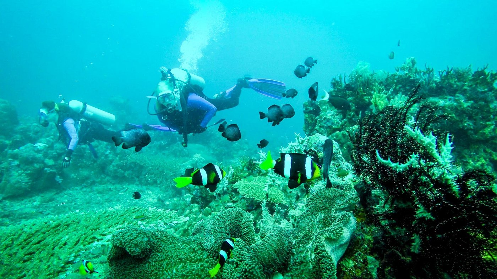
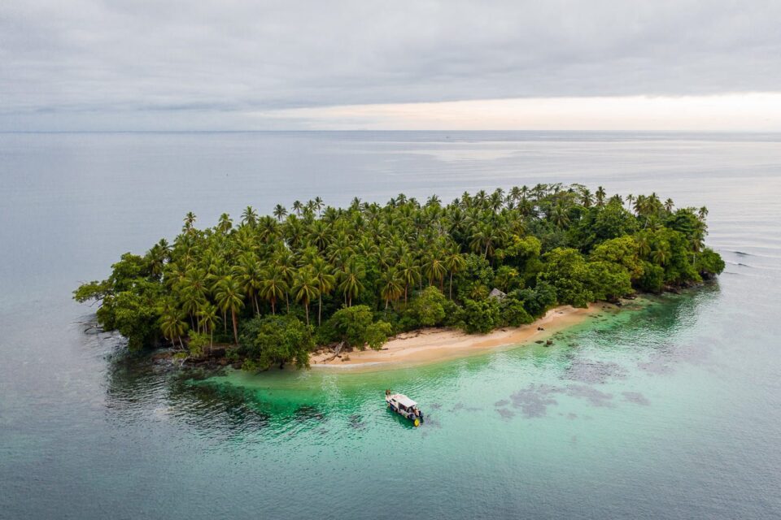
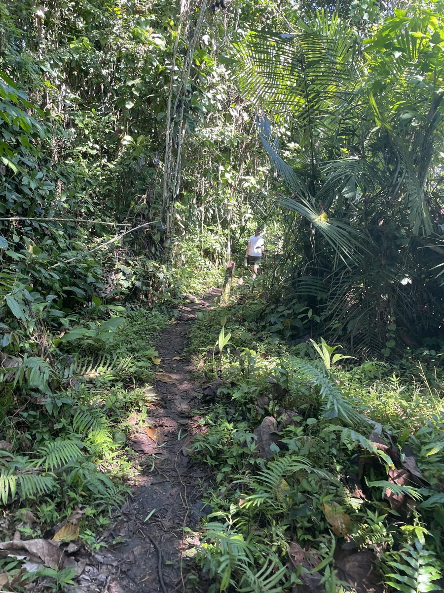
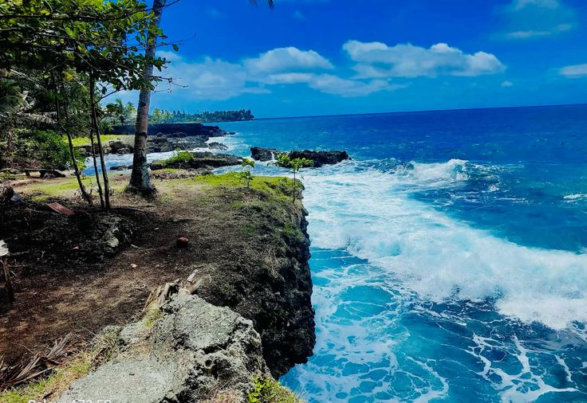

DivingMadang Reef & Wrecks
Explore coral gardens, reef walls and scattered WWII wrecks in clear tropical waters.
Discover Madang
Explore Madang Province through reef dives, island escapes, heritage sites and rainforest adventures.
Dive deeper

DivingExplore coral gardens, reef walls and scattered WWII wrecks in clear tropical waters.

DivingFloat above shallow reef shelves where colorful fish, coral bommies and warm water make every moment easy and scenic.
Island escapes
Known for pottery-making and easygoing coastal charm, Bilbil offers a relaxed island experience.

IslandDrop into sandy coves, swim in clear waters and enjoy a full day of coastal relaxation.

IslandA quiet island stop for sunset swims, ocean views and slow evenings close to the reef edge.
Stories of the coast
Walk through wartime memorials and coastal sites that still tell the story of the Pacific campaign.
Follow local stories of wartime strategy, resilience and the coastal communities that shaped the region.
Nature and culture
Wander through cool rainforest paths, listen to birdlife and soak in the landscape beyond the shore.
Meet locals, learn traditional artforms and enjoy a cultural visit filled with stories and craftsmanship.
Start early to catch forest birds, misty trails and the sound of the region waking up around you.